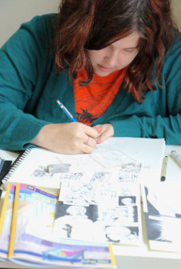

<div class="container">
    <div class="row">
        <div class="col-md-12">
            <p>Kathryn Silver was born in Indianapolis Indiana. She earned her BFA in sequential art from SCAD in 2012, has done flatting for comics, freelanced, and self-published several short stories. Her eclectic passions include animals, such as her dog and cat, Dragon Ball Z, and Korean Dramas. She is passionate about telling meaningful stories that evoke emotion. She is currently working her long format comic “Paper Triangle” about drawings coming to life and writing stories about mental health You can find more of her artwork at <a href="http://www.kathrynsilver.com" target="_new">www.kathrynsilver.com</a>  and follow her on facebook at @ksilver18. </p>
            
            <ul>
                <li>Laura Neubert</li>
                <li> Matthew Allbright</li>
                <li>Brittany Smith</li>
                <li>Ken Nimura</li>
                <li>Nathan Fox</li>
                <li>Anelisa Garfunkel</li>
                <li>Ben Zackhem </li>
                <li>Lisa Cron</li>
                <li>Christina Roussos</li>
                <li>MFAVN Class 2019</li>
                <li>Kristen Coulter</li>
                <li>Charlie Silver</li>
                <li>Ink Silver</li>
                <h2>Sponsored by</h2>
                <li>Jerome D Silver. MD</li>
                <li>Stephanie Silver</li>
            </ul>
        </div>
    </div>
</div>
